Cristian Leonardo Rubio · Juan David Padilla Serpa · Homar Nicolás Muñoz Santa
Composición Fotográfica 2026
Lugares de Paso es un proyecto fotográfico autoral realizado por Cristian Leonardo Rubio, Juan David Padilla Serpa y Homar Nicolás Muñoz Santa. La serie explora espacios urbanos de tránsito como estaciones, cruces, escaleras, calles, ventanas y lugares de espera.
Las fotografías fueron tomadas en distintos espacios urbanos de Colombia, principalmente en Bogotá, con algunas imágenes realizadas en Medellín y Cartagena. A través de tres miradas distintas, el proyecto propone observar aquellos lugares que normalmente se atraviesan sin detenerse.
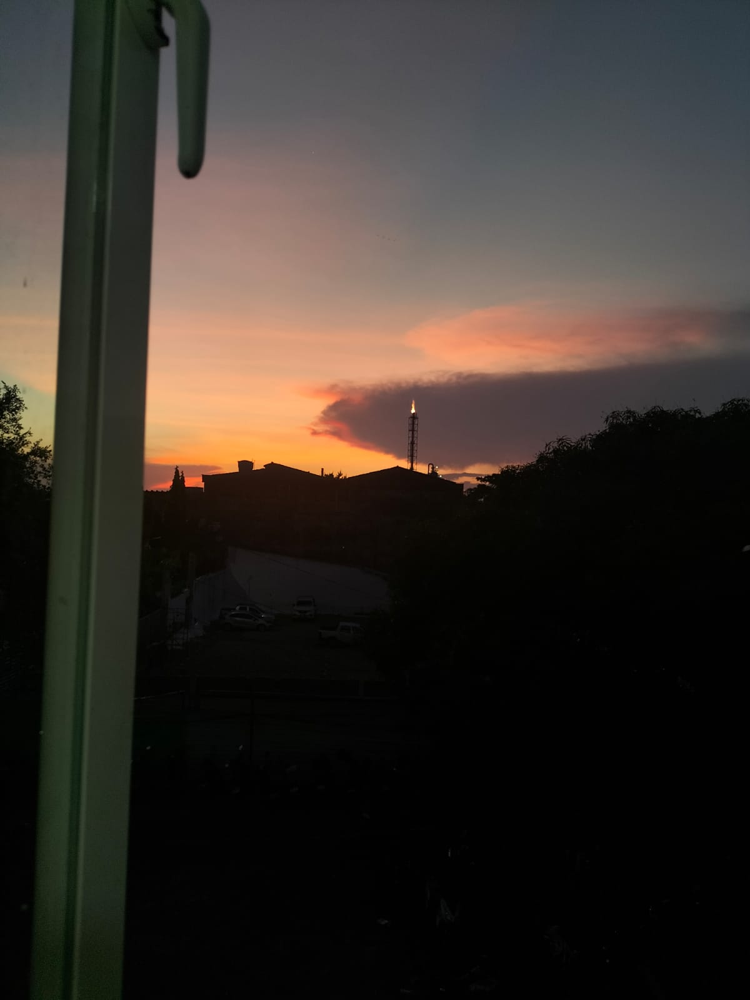
Fotografía 1
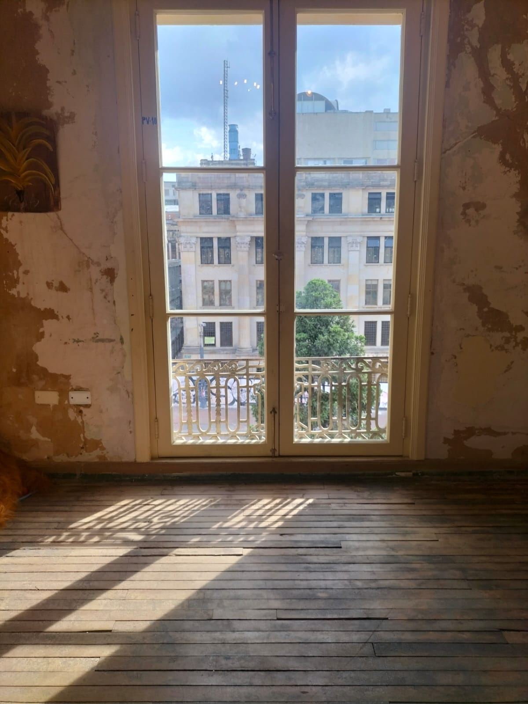
Fotografía 2
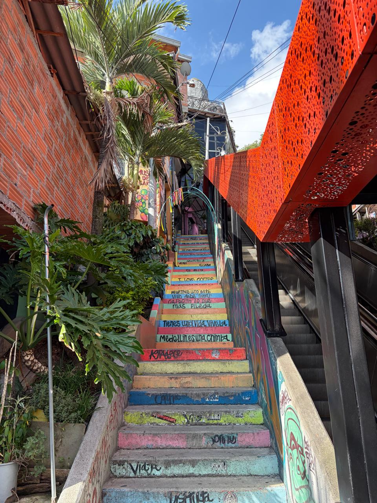
Fotografía 3
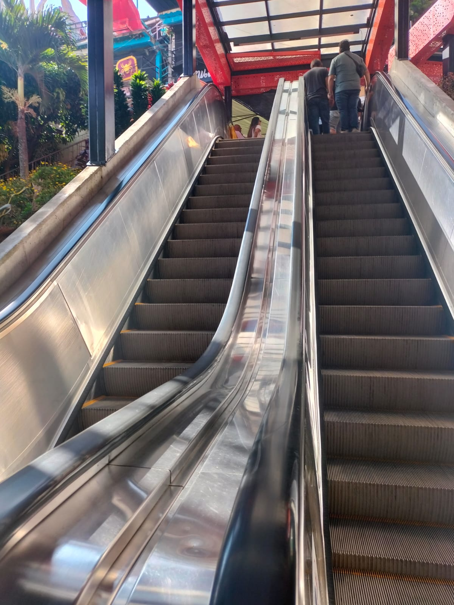
Fotografía 4
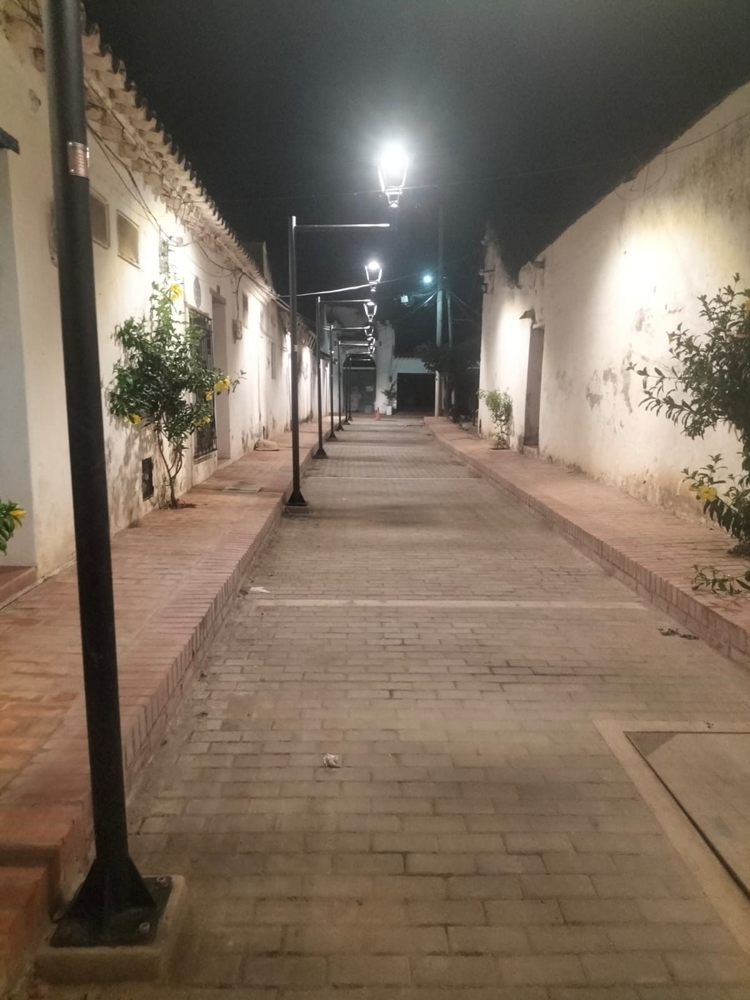
Fotografía 5
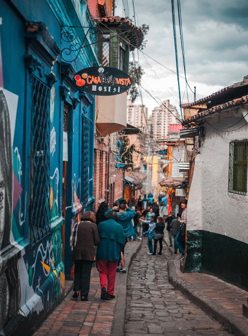
Fotografía 6
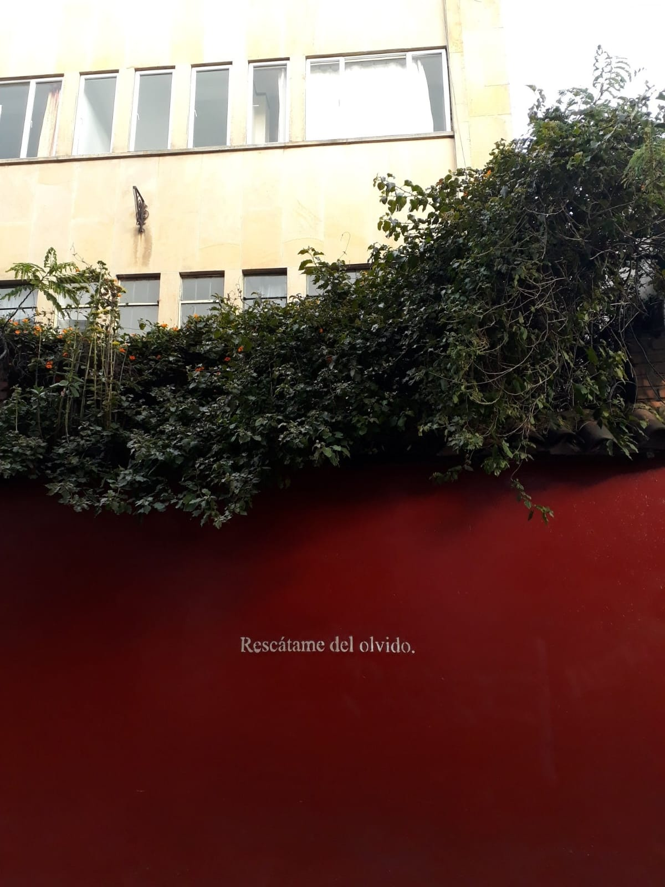
Fotografía 7
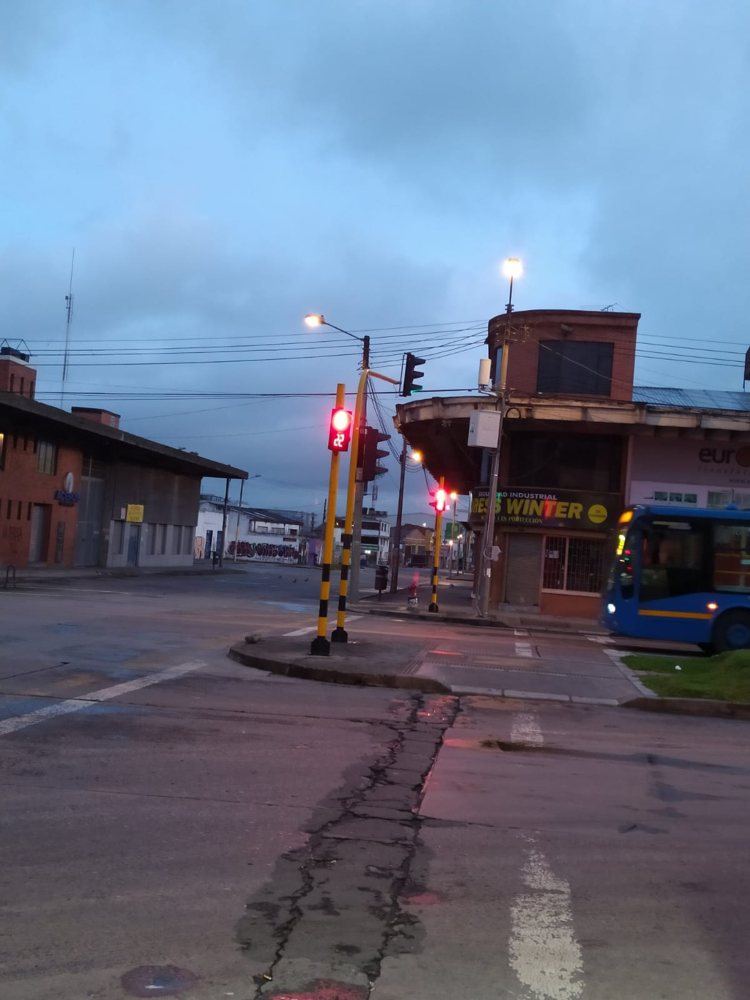
Fotografía 8
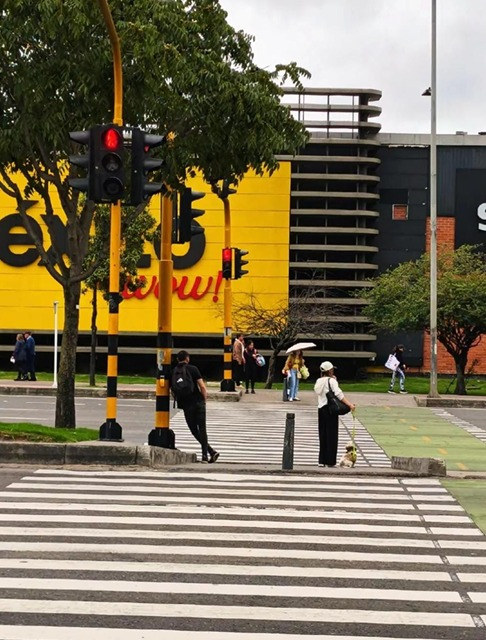
Fotografía 9
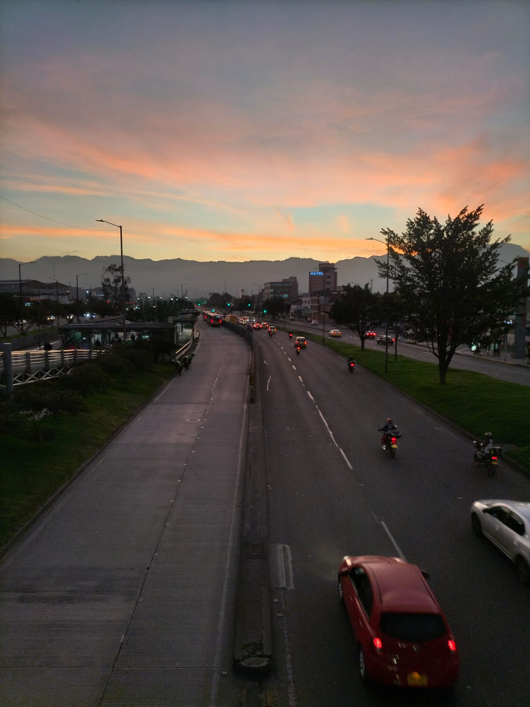
Fotografía 10
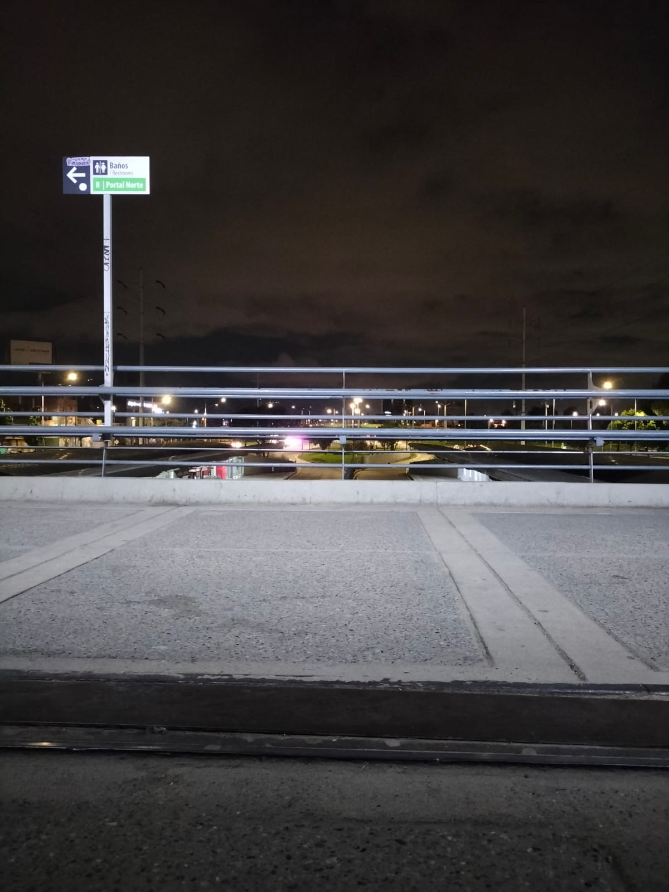
Fotografía 11
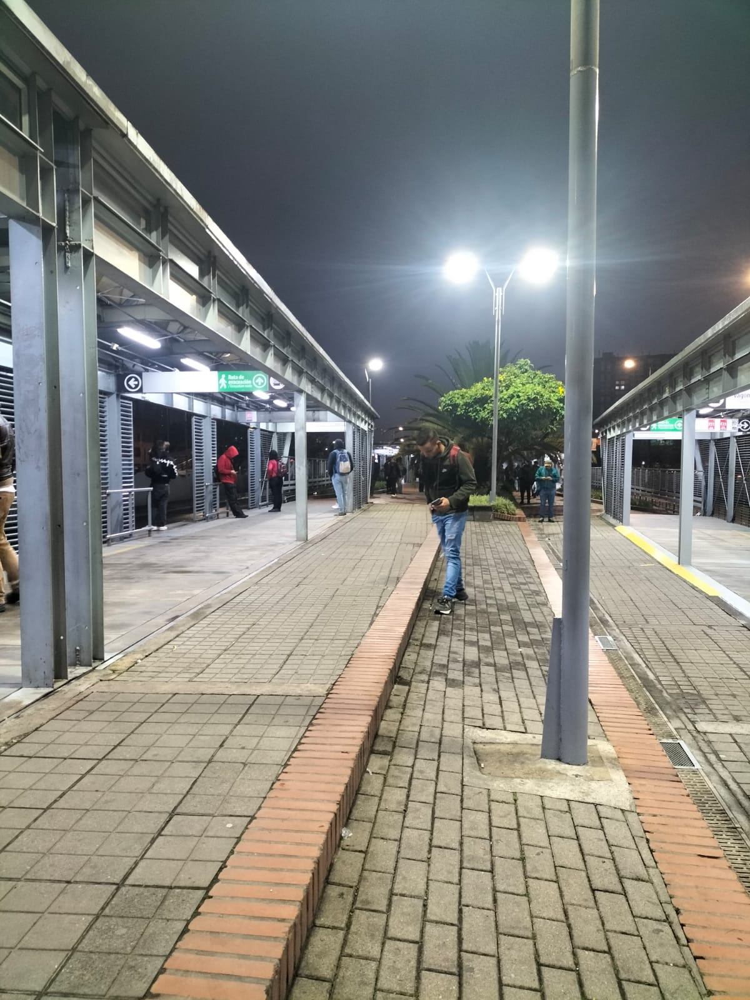
Fotografía 12